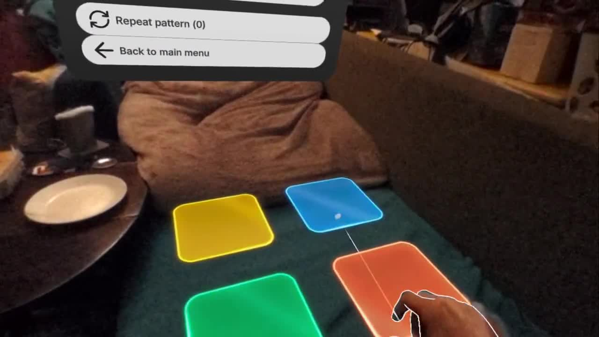
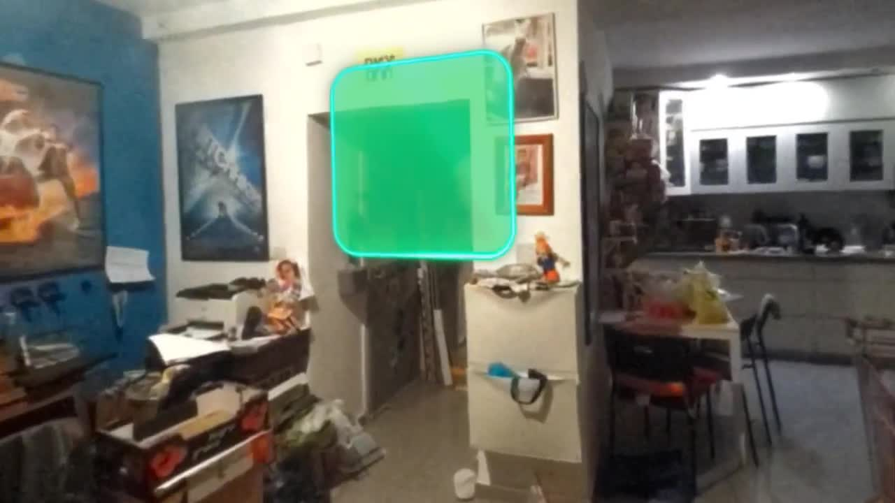
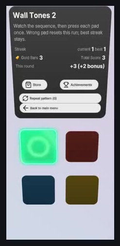
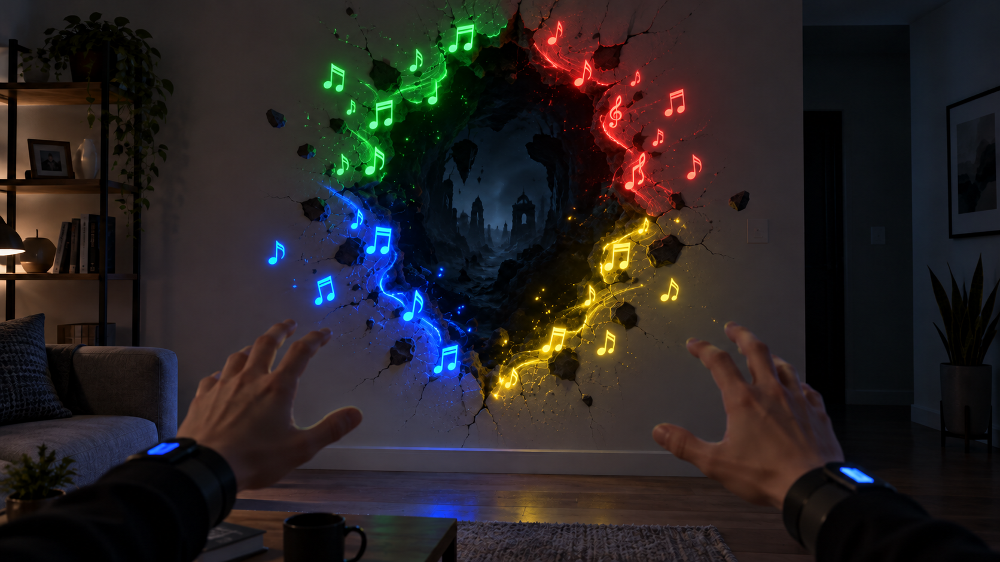

Wall Tones 2 - proposed gallery
Proposed gallery for review, not yet applied to Devpost. Actual captured gameplay, not concept renders. Images show a recorded development build.
Seated mixed-reality play

Seated mixed-reality gameplay with four pads arranged within reach and a tracked hand visible. Captured development build.Download JPEG
Pad placement in your room

A musical pad placed in the player's room. Captured development build.Download JPEG
Phone-browser play

Phone-browser gameplay showing the four pads, streak, Gold Bars, Store and Achievements controls. Cropped from a gameplay recording.Download JPEG
Rift concept art

Rift visual direction. Concept art, not gameplay footage.Download concept PNG
Full submission copy draft